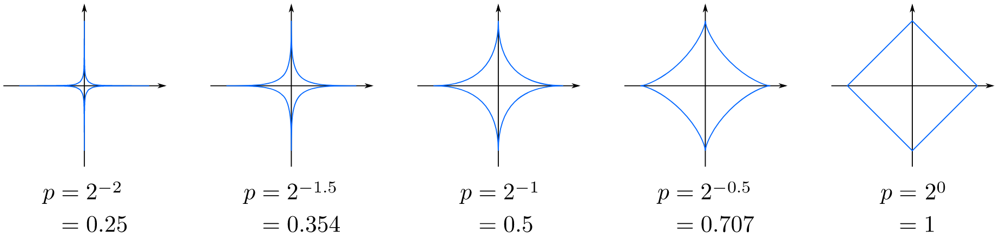
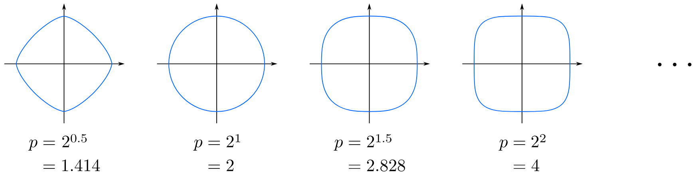
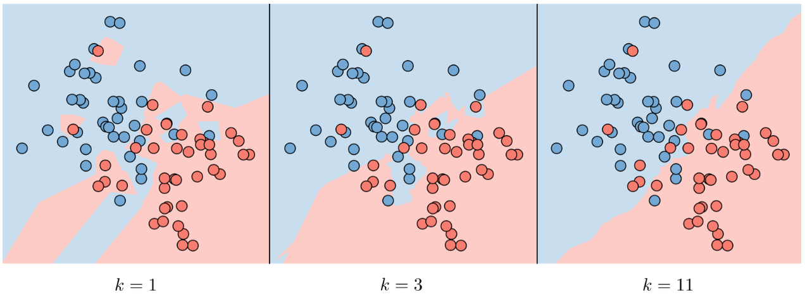
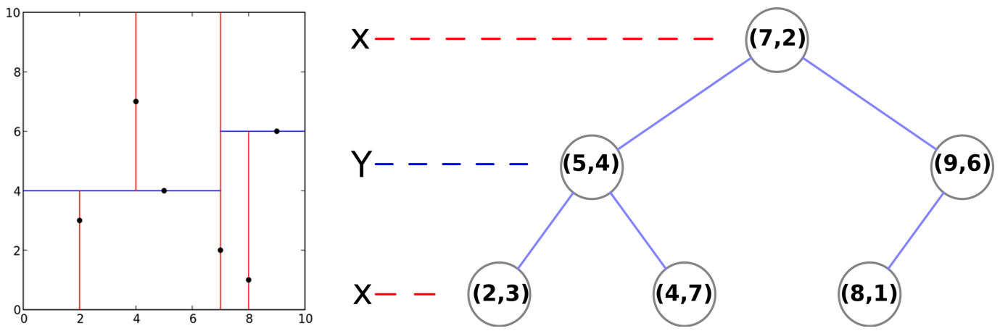
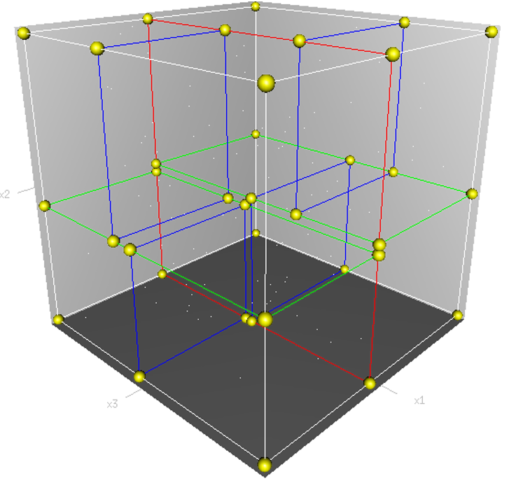
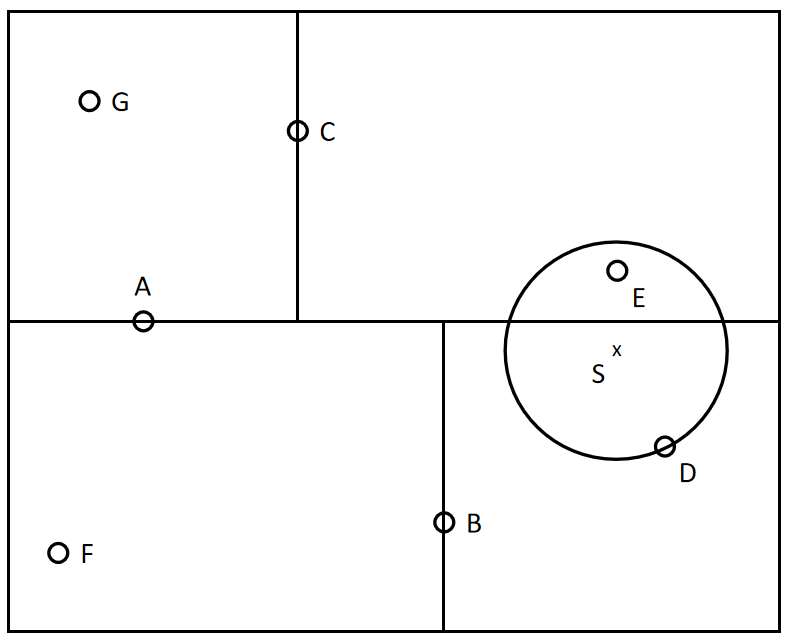

其中，
特征空间中两个实例点的距离是两个实例点相似程度的反映。
在二维空间中的Minkowski距离的等距线示意图如下：


当
如果选择较大的

实现
实现
构造
通常，依次选择坐标轴对空间切分，选择训练实例点在选定坐标轴上的中位数为切分点，这样得到的kd树是平衡的，但平衡的
构造平衡
输入：
输出：
(1) 开始：构造根结点，对应包含
将落在切分超平面上的实例点保存在根结点。
(2) 重复：对深度为
(3) 直到两个子区域没有实例存在时停止，从而形成
下图为构建

三维空间内

使用
包含目标点的叶结点对应包含目标点的最小超矩形区域。以此叶结点的实例点作为当前最近点。目标点的最近邻一定在以目标点为中心并通过当前最近点的超球体的内部。然后返回当前节点的父结点，如果父结点的另一子结点的超矩形区域与超球体相交，那么在相交的区域内寻找与目标点更近的实例点。如果存在这样的点，将此点作为新的当前最近点。算法转到更上一级的父结点，继续上述过程。若父结点的另一子结点的超矩形区域与超球体不相交，或不存在比当前最近点更近的点，则停止搜索。
使用
输入：已构造的
输出：
(1) 在
(2) 以此叶结点为当前最近点。
(3) 递归地向上回退，在每个结点进行以下操作：
如果该结点保存的实例点比当前最近点距目标点更近，则以该实例点为当前最近点。
当前最近点一定存在于该结点的一个子结点对应的区域。检查该子结点的父结点的另一子结点对应的区域是否有更近的点。具体地，检查另一子结点对应的区域是否与以目标点为球心、以目标点与当前最近点间的距离为半径的超球体相交。如果相交，可能在另一个子结点对应的区域内存在距离目标点更近的点，移动到另一子结点，接着，递归地搜索；如果不相交，向上回退。
(4) 当回退到根结点时，搜索结束。最后的“当前最近点”即为

import numpy as npfrom collections import Counterimport matplotlib.pyplot as pltfrom sklearn import datasetsfrom sklearn.utils import shuffle
iris = datasets.load_iris() # 导入sklearn iris数据集X, y = shuffle(iris.data, iris.target, random_state=13) # 打乱数据后的数据与标签X = X.astype(np.float32) # 数据转换为float32格式offset = int(X.shape[0] * 0.7) # 训练集与测试集的简单划分，训练-测试比例为7：3X_train, y_train = X[:offset], y[:offset]X_test, y_test = X[offset:], y[offset:]
y_train = y_train.reshape((-1, 1))y_test = y_test.reshape((-1, 1))print('X_train=', X_train.shape)print('X_test=', X_test.shape)print('y_train=', y_train.shape)print('y_test=', y_test.shape)
# 定义欧氏距离def compute_distances(X, X_train): num_test = X.shape[0] # 测试实例样本量 num_train = X_train.shape[0] # 训练实例样本量 dists = np.zeros((num_test, num_train)) # 基于训练和测试维度的欧氏距离初始化 M = np.dot(X, X_train.T) # 测试样本与训练样本的矩阵点乘 te = np.square(X).sum(axis=1) # 测试样本矩阵平方 tr = np.square(X_train).sum(axis=1) # 训练样本矩阵平方 dists = np.sqrt(-2 * M + tr + np.matrix(te).T) # 计算欧式距离 return dists
dists = compute_distances(X_test, X_train)plt.imshow(dists, interpolation='none')plt.show()
# 定义预测函数def predict_labels(y_train, dists, k=1): num_test = dists.shape[0] # 测试样本量 y_pred = np.zeros(num_test) # 初始化测试集预测结果 for i in range(num_test): closest_y = [] # 初始化最近邻列表 labels = y_train[np.argsort(dists[i, :])].flatten() closest_y = labels[0:k] # 取最近的k个值 c = Counter(closest_y) # 对最近的k个值进行计数统计 y_pred[i] = c.most_common(1)[0][0] # 取计数最多的类别 return y_pred
# 测试集预测结果y_test_pred = predict_labels(y_train, dists, k=1)y_test_pred = y_test_pred.reshape((-1, 1))# 找出预测正确的实例num_correct = np.sum(y_test_pred == y_test)# 计算准确率accuracy = float(num_correct) / X_test.shape[0]print('Got %d/%d correct=>accuracy:%f' % (num_correct, X_test.shape[0], accuracy))
# 5折交叉验证num_folds = 5k_choices = [1, 3, 5, 8, 10, 12, 15, 20, 50, 100] # 候选k值X_train_folds = np.array_split(X_train, num_folds) # 训练数据划分y_train_folds = np.array_split(y_train, num_folds) # 训练标签划分k_to_accuracies = {}# 遍历所有候选k值for k in k_choices: for fold in range(num_folds): # 五折遍历 # 对传入的训练集单独划出一个验证集作为测试集 validation_X_test = X_train_folds[fold] validation_y_test = y_train_folds[fold] temp_X_train = np.concatenate(X_train_folds[:fold] + X_train_folds[fold + 1:]) temp_y_train = np.concatenate(y_train_folds[:fold] + y_train_folds[fold + 1:]) # 计算距离 temp_dists = compute_distances(validation_X_test, temp_X_train) temp_y_test_pred = predict_labels(temp_y_train, temp_dists, k=k) temp_y_test_pred = temp_y_test_pred.reshape((-1, 1)) # 查看分类准确率 num_correct = np.sum(temp_y_test_pred == validation_y_test) num_test = validation_X_test.shape[0] accuracy = float(num_correct) / num_test k_to_accuracies[k] = k_to_accuracies.get(k, []) + [accuracy]
# 打印不同 k 值不同折数下的分类准确率for k in sorted(k_to_accuracies): for accuracy in k_to_accuracies[k]: print('k = %d, accuracy = %f' % (k, accuracy))
# 打印不同 k 值不同折数下的分类准确率for k in k_choices: accuracies = k_to_accuracies[k] # 取出第k个k值的分类准确率 plt.scatter([k] * len(accuracies), accuracies) # 绘制不同k值准确率的散点图
accuracies_mean = np.array([np.mean(v) for k, v in sorted(k_to_accuracies.items())])accuracies_std = np.array([np.std(v) for k, v in sorted(k_to_accuracies.items())])plt.errorbar(k_choices, accuracies_mean, yerr=accuracies_std)plt.title('Cross-validation on k')plt.xlabel('k')plt.ylabel('Cross-validation accuracy')plt.show()import numpy as npimport matplotlib.pyplot as pltfrom sklearn.neighbors import KNeighborsClassifierfrom sklearn.datasets import load_irisfrom sklearn.model_selection import train_test_splitfrom sklearn.metrics import classification_report
def plot_decision_boundary(model, axis): """ 在axis范围内绘制模型model的决策边界 :param model: classification model which must have 'predict' function :param axis: [left, right, down, up] """ x0, x1 = np.meshgrid( np.linspace(axis[0], axis[1], int((axis[1] - axis[0]) * 100)).reshape(-1, 1), np.linspace(axis[2], axis[3], int((axis[3] - axis[2]) * 100)).reshape(-1, 1), ) X_new = np.c_[x0.ravel(), x1.ravel()]
y_predict = model.predict(X_new) zz = y_predict.reshape(x0.shape)
from matplotlib.colors import ListedColormap custom_cmap = ListedColormap(['#EF9A9A', '#FFF59D', '#90CAF9'])
plt.contourf(x0, x1, zz, linewidth=5, cmap=custom_cmap)
X, y = load_iris(return_X_y=True)X = X[:, :2] # 仅选择前两个特征，便于绘制决策边界X_train, X_test, y_train, y_test = train_test_split(X, y) # 将数据划分为训练集和测试集print(X_train.shape, X_test.shape, y_train.shape, y_test.shape) # (112, 2) (38, 2) (112,) (38,)
for i, n in enumerate([1, 5, 30]): plt.subplot(1, 3, i + 1)
knn_cls = KNeighborsClassifier(n_neighbors=n) knn_cls.fit(X_train, y_train) y_pred = knn_cls.predict(X_test)
print(classification_report(y_test, y_pred)) # 分类报告中包含precision/recall/f1-score
plt.title('n_neighbors=' + str(n)) plot_decision_boundary(knn_cls, axis=[3, 8, 1, 5]) plt.scatter(X_test[y_test == 0, 0], X_test[y_test == 0, 1]) plt.scatter(X_test[y_test == 1, 0], X_test[y_test == 1, 1]) plt.scatter(X_test[y_test == 2, 0], X_test[y_test == 2, 1])
plt.show()李航. 统计学习方法. 北京: 清华大学出版社, 2019.
鲁伟. 机器学习: 公式推导与代码实现. 北京: 人民邮电出版社, 2022.
Stanford University机器学习笔记：https://stanford.edu/~shervine/teaching/
Minkowski距离维基百科：https://en.wikipedia.org/wiki/Minkowski_distance